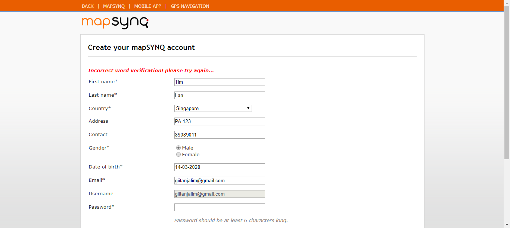
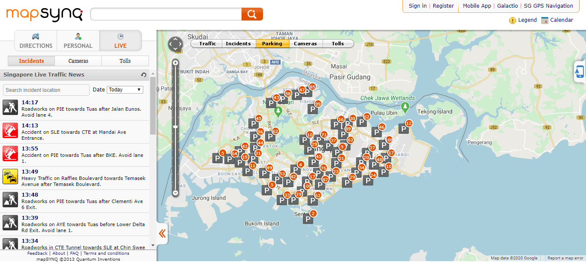

| Param | Value |
|---|---|
| User Name | ASUS |
| OS | Windows 8.1 |
| Java Version | 1.8.0_05 |
| Host Name | DESKTOP-FBHI1RA |
| Extent Cucumber Reporter version | v1.1.1 |
| Cucumber version | v1.2.4 |
| Selenium version | v2.53.0 |
| Name |
|---|
| @CameraFeature |
| @IncidentMapper |
| @Map |
| @ParkingMapper |
| @Registration |
| @Suite |
| @TestSuite |
| @TollsFeature |
| @TrafficMapper |
| @TrafficSpeedMapper |
| Status | Timestamp | Details |
|---|
| Status | Timestamp | StepName | Details |
|---|---|---|---|
| 16:14:24 | user navigates to application URL : "http://www.mapsynq.com" application | PASSED | |
| 16:14:25 | I am on mapSYNQ Landing Page | PASSED | |
| 16:14:27 | I click on "Register" link on Top Menu Bar | PASSED | |
| 16:14:27 | I navigate to mapSYNQ User Profile page | PASSED | |
| 16:14:27 | I enter "Tim" in "profile[first_name]" Field textBox | PASSED | |
| 16:14:27 | I enter "Lan" in "profile[last_name]" Field textBox | PASSED | |
| 16:14:27 | I select "Singapore" from Country Field dropdown | PASSED | |
| 16:14:28 | I enter "PA 123" in "profile[address]" Field textBox | PASSED | |
| 16:14:28 | I enter "89089011" in "profile[contact_no]" Field textBox | PASSED | |
| 16:14:28 | I set value for Gender radiobutton | PASSED | |
| 16:14:29 | I set "27-08-2010" in DateOfBirth Field textBox | PASSED | |
| 16:14:29 | I enter "giitanjalim@gmail.com" in "profile[email]" Field textBox | PASSED | |
| 16:14:29 | I enter "test1239" in "identity[password]" Field textBox | PASSED | |
| 16:14:29 | I enter "test1239" in "identity[password_confirmation]" Field textBox | PASSED | |
| 16:14:30 | I set check value for I agree to terms and conditions checkbox | PASSED | |
| 16:14:30 | I click on Create button | PASSED | |
| 16:15:00 | I verify new mapSYNQ account successfully created | org.openqa.selenium.NoSuchElementException: no such element: Unable to locate element: {"method":"xpath","selector":"//*[@id='div_header']/div/div/a[contains(text(),'Register')]"} (Session info: chrome=80.0.3987.122) For documentation on this error, please visit: https://www.seleniumhq.org/exceptions/no_such_element.html Build info: version: '3.141.59', revision: 'e82be7d358', time: '2018-11-14T08:17:03' System info: host: 'DESKTOP-FBHI1RA', ip: '192.168.1.87', os.name: 'Windows 8.1', os.arch: 'amd64', os.version: '6.3', java.version: '1.8.0_05' Driver info: org.openqa.selenium.chrome.ChromeDriver Capabilities {acceptInsecureCerts: false, browserName: chrome, browserVersion: 80.0.3987.122, chrome: {chromedriverVersion: 80.0.3987.106 (f68069574609..., userDataDir: C:\Users\ASUS\AppData\Local...}, goog:chromeOptions: {debuggerAddress: localhost:65005}, javascriptEnabled: true, networkConnectionEnabled: false, pageLoadStrategy: normal, platform: WINDOWS, platformName: WINDOWS, proxy: Proxy(), setWindowRect: true, strictFileInteractability: false, timeouts: {implicit: 0, pageLoad: 300000, script: 30000}, unhandledPromptBehavior: dismiss and notify} Session ID: 66d3810a2545c784e2d7d1ceff8162e0 *** Element info: {Using=xpath, value=//*[@id='div_header']/div/div/a[contains(text(),'Register')]} at sun.reflect.NativeConstructorAccessorImpl.newInstance0(Native Method) at sun.reflect.NativeConstructorAccessorImpl.newInstance(NativeConstructorAccessorImpl.java:62) at sun.reflect.DelegatingConstructorAccessorImpl.newInstance(DelegatingConstructorAccessorImpl.java:45) at java.lang.reflect.Constructor.newInstance(Constructor.java:408) at org.openqa.selenium.remote.http.W3CHttpResponseCodec.createException(W3CHttpResponseCodec.java:187) at org.openqa.selenium.remote.http.W3CHttpResponseCodec.decode(W3CHttpResponseCodec.java:122) at org.openqa.selenium.remote.http.W3CHttpResponseCodec.decode(W3CHttpResponseCodec.java:49) at org.openqa.selenium.remote.HttpCommandExecutor.execute(HttpCommandExecutor.java:158) at org.openqa.selenium.remote.service.DriverCommandExecutor.execute(DriverCommandExecutor.java:83) at org.openqa.selenium.remote.RemoteWebDriver.execute(RemoteWebDriver.java:552) at org.openqa.selenium.remote.RemoteWebDriver.findElement(RemoteWebDriver.java:323) at org.openqa.selenium.remote.RemoteWebDriver.findElementByXPath(RemoteWebDriver.java:428) at org.openqa.selenium.By$ByXPath.findElement(By.java:353) at org.openqa.selenium.remote.RemoteWebDriver.findElement(RemoteWebDriver.java:315) at org.openqa.selenium.support.pagefactory.DefaultElementLocator.findElement(DefaultElementLocator.java:69) at org.openqa.selenium.support.pagefactory.internal.LocatingElementHandler.invoke(LocatingElementHandler.java:38) at com.sun.proxy.$Proxy20.click(Unknown Source) at com.livetraffic.app.page.functions.MapSYNQCreateNewAccountPageObject.newUserCreation(MapSYNQCreateNewAccountPageObject.java:135) at com.livetraffic.app.stepdefinition.MapSYNQCreateNewAccountStep.iVerifyNewMapSYNQAccountSuccessfullyCreated(MapSYNQCreateNewAccountStep.java:67) at ?.Then I verify new mapSYNQ account successfully created(feature_files_list/mapSYNQCreateNewAccount.feature:23) | |
| 16:15:00 | I close browser | SKIPPED | |
| 16:15:00 | Current Page URL is http://account.mapsynq.com/profiles | ||
| 16:15:01 |  |
| Status | Timestamp | Details |
|---|
| Status | Timestamp | StepName | Details |
|---|---|---|---|
| 16:15:14 | user navigates to application URL : "http://www.mapsynq.com" application | PASSED | |
| 16:15:15 | I am on mapSYNQ Landing Page | PASSED | |
| 16:15:15 | I click on Ad Toggle icon | PASSED | |
| 16:15:15 | I verify Galactio Ad info should not be displayed | PASSED | |
| 16:15:18 | I verify Map should be loaded on page with Incidents selected Default | PASSED | |
| 16:15:18 | I verify Direction icon on Map | PASSED | |
| 16:15:18 | I click on "North" Icon | PASSED | |
| 16:15:18 | I verify maps should move according to direction | PASSED | |
| 16:15:19 | I click on "South" Icon | PASSED | |
| 16:15:19 | I verify maps should move according to direction | PASSED | |
| 16:15:19 | I click on "East" Icon | PASSED | |
| 16:15:20 | I verify maps should move according to direction | PASSED | |
| 16:15:20 | I click on "West" Icon | PASSED | |
| 16:15:20 | I verify maps should move according to direction | PASSED | |
| 16:15:20 | I verify Zoom Bar icon on Map | PASSED | |
| 16:15:21 | I click on "Plus" Icon | PASSED | |
| 16:15:21 | I click on "Minus" Icon | PASSED | |
| 16:15:21 | I verify Drag icon on Zoom Bar | PASSED | |
| 16:15:22 | I click on "Legend" Icon | PASSED | |
| 16:15:22 | I verify Legend Poup up should be displayed | PASSED | |
| 16:15:22 | I click on "Calendar" Icon | PASSED | |
| 16:15:23 | I verify Calendar Poup up should be displayed | PASSED | |
| 16:15:23 | I click on SP Toggle icon | PASSED | |
| 16:15:23 | I verify Left Navigation Panel should not be displayed | PASSED | |
| 16:15:24 | I close browser | PASSED |
| Status | Timestamp | Details |
|---|
| Status | Timestamp | StepName | Details |
|---|---|---|---|
| 16:15:36 | user navigates to application URL : "http://www.mapsynq.com" application | PASSED | |
| 16:15:37 | I am on mapSYNQ Landing Page | PASSED | |
| 16:15:37 | I click on Ad Toggle icon | PASSED | |
| 16:15:37 | I verify Galactio Ad info should not be displayed | PASSED | |
| 16:15:39 | I verify Map should be loaded on page with Incidents selected Default | PASSED | |
| 16:15:39 | I click on "Incidents" icon button on Map app | PASSED | |
| 16:15:39 | I click the "Cameras" icon button on Map app | PASSED | |
| 16:15:40 | I verify camera icons should be loaded in map | PASSED | |
| 16:15:40 | I click on the "Cameras" icon image on Map app | PASSED | |
| 16:15:40 | I verify Camera Pop up should be displayed on Map | PASSED | |
| 16:15:45 | I close browser | PASSED |
| Status | Timestamp | StepName | Details |
|---|---|---|---|
| 16:15:53 | user navigates to application URL : "http://www.mapsynq.com" application | PASSED | |
| 16:16:01 | I am on mapSYNQ Landing Page | PASSED | |
| 16:16:01 | I click on Ad Toggle icon | PASSED | |
| 16:16:01 | I verify Galactio Ad info should not be displayed | PASSED | |
| 16:16:03 | I verify Map should be loaded on page with Incidents selected Default | PASSED | |
| 16:16:04 | I click on "Incidents" icon button on Map app | PASSED | |
| 16:16:04 | I click on the "Cameras" icon button on Info Panel | PASSED | |
| 16:16:04 | I verify Singapore Live Traffic Cameras should be displayed | PASSED | |
| 16:16:05 | I click on "CameraLinks" link in Info Panel | PASSED | |
| 16:16:05 | I verify Camera Pop up should be displayed on Map | PASSED | |
| 16:16:06 | I close browser | PASSED |
| Status | Timestamp | StepName | Details |
|---|---|---|---|
| 16:16:15 | user navigates to application URL : "http://www.mapsynq.com" application | PASSED | |
| 16:16:16 | I am on mapSYNQ Landing Page | PASSED | |
| 16:16:16 | I click on Ad Toggle icon | PASSED | |
| 16:16:16 | I verify Galactio Ad info should not be displayed | PASSED | |
| 16:16:18 | I verify Map should be loaded on page with Incidents selected Default | PASSED | |
| 16:16:19 | I click on the "Cameras" icon button on Info Panel | PASSED | |
| 16:16:19 | I verify Singapore Live Traffic Cameras should be displayed | PASSED | |
| 16:16:20 | I enter "Adam Road" search textbox on Info Panel | PASSED | |
| 16:16:20 | I verify CameraLink should display by SearchText | PASSED | |
| 16:16:22 | I click on "CameraLinks" link in Info Panel | PASSED | |
| 16:16:22 | I verify Camera Pop up should be displayed on Map | PASSED | |
| 16:16:23 | I close browser | PASSED |
| Status | Timestamp | Details |
|---|
| Status | Timestamp | StepName | Details |
|---|---|---|---|
| 16:16:32 | user navigates to application URL : "http://www.mapsynq.com" application | PASSED | |
| 16:16:33 | I am on mapSYNQ Landing Page | PASSED | |
| 16:16:33 | I click on Ad Toggle icon | PASSED | |
| 16:16:33 | I verify Galactio Ad info should not be displayed | PASSED | |
| 16:16:34 | I verify Map should be loaded on page with Incidents selected Default | PASSED | |
| 16:16:34 | I verify News Menu Panel should be displayed | PASSED | |
| 16:16:35 | I click on "Incidents" item on Info Panel | PASSED | |
| 16:16:35 | I verify Content Pop up should be displayed on Map | PASSED | |
| 16:16:35 | I verify contents in Info Panel and Content Pop up for "Incidents0" matches | PASSED | |
| 16:16:36 | I click on "Accident" item on Info Panel | PASSED | |
| 16:16:36 | I verify Content Pop up should be displayed on Map | PASSED | |
| 16:16:36 | I verify contents in Info Panel and Content Pop up for "Incidents1" matches | PASSED | |
| 16:16:36 | I click on "HeavyTraffic" item on Info Panel | PASSED | |
| 16:16:36 | I verify Content Pop up should be displayed on Map | PASSED | |
| 16:16:36 | I verify contents in Info Panel and Content Pop up for "Incidents3" matches | PASSED | |
| 16:16:41 | I close browser | PASSED |
| Status | Timestamp | StepName | Details |
|---|---|---|---|
| 16:16:49 | user navigates to application URL : "http://www.mapsynq.com" application | PASSED | |
| 16:16:50 | I am on mapSYNQ Landing Page | PASSED | |
| 16:16:50 | I click on Ad Toggle icon | PASSED | |
| 16:16:50 | I verify Galactio Ad info should not be displayed | PASSED | |
| 16:16:51 | I verify Map should be loaded on page with Incidents selected Default | PASSED | |
| 16:16:51 | I verify News Menu Panel should be displayed | PASSED | |
| 16:16:52 | I enter "Accident" in Search text box | PASSED | |
| 16:16:53 | I verify searched items displayed on News Info Panel | PASSED | |
| 16:16:53 | I click on "Accident" item on Info Panel | PASSED | |
| 16:16:53 | I verify Content Pop up should be displayed on Map | PASSED | |
| 16:16:58 | I close browser | PASSED |
| Status | Timestamp | StepName | Details |
|---|---|---|---|
| 16:17:08 | user navigates to application URL : "http://www.mapsynq.com" application | PASSED | |
| 16:17:08 | I am on mapSYNQ Landing Page | PASSED | |
| 16:17:08 | I click on Ad Toggle icon | PASSED | |
| 16:17:09 | I verify Galactio Ad info should not be displayed | PASSED | |
| 16:17:13 | I verify Map should be loaded on page with Incidents selected Default | PASSED | |
| 16:17:13 | I click on "Incident" icon image on Map app | PASSED | |
| 16:17:13 | I verify Incident details Pop up should be displayed | PASSED | |
| 16:17:16 | I click on "IncidentsLink" link on Incident details Pop up | PASSED | |
| 16:17:18 | I verify Incident details Content Pop up should be displayed | PASSED | |
| 16:17:18 | I click on "Incident" icon image on Map app | PASSED | |
| 16:17:18 | I click on "Zoomin" link on Incident details Pop up | PASSED | |
| 16:17:18 | I verify map should be zoomed with Incident Details Content Pop up | PASSED | |
| 16:17:23 | I close browser | PASSED |
| Status | Timestamp | Details |
|---|
| Status | Timestamp | StepName | Details |
|---|---|---|---|
| 16:17:38 | user navigates to application URL : "http://www.mapsynq.com" application | PASSED | |
| 16:17:39 | I am on mapSYNQ Landing Page | PASSED | |
| 16:17:39 | I click on Ad Toggle icon | PASSED | |
| 16:17:39 | I verify Galactio Ad info should not be displayed | PASSED | |
| 16:17:41 | I verify Map should be loaded on page with Incidents selected Default | PASSED | |
| 16:17:42 | I click on "Incidents" icon button on Map app | PASSED | |
| 16:17:42 | I click on the "Parking" icon button on Map app | PASSED | |
| 16:18:02 | I verify Parking Slots icon should be displayed | PASSED | |
| 16:20:32 | I click on the "ParkingSlots" icon button on Map app | org.openqa.selenium.TimeoutException: Expected condition failed: waiting for element to be clickable: [[ChromeDriver: chrome on WINDOWS (347417b9c52338de9c5bd0f3eb67e017)] -> xpath: //*[local-name()='svg']//*[local-name()='g' and @id='OpenLayers.Layer.Vector_666_vroot']//*[local-name()='image' and @id='OpenLayers.Geometry.Point_728']] (tried for 150 second(s) with 500 milliseconds interval) Build info: version: '3.141.59', revision: 'e82be7d358', time: '2018-11-14T08:17:03' System info: host: 'DESKTOP-FBHI1RA', ip: '192.168.1.87', os.name: 'Windows 8.1', os.arch: 'amd64', os.version: '6.3', java.version: '1.8.0_05' Driver info: org.openqa.selenium.chrome.ChromeDriver Capabilities {acceptInsecureCerts: false, browserName: chrome, browserVersion: 80.0.3987.122, chrome: {chromedriverVersion: 80.0.3987.106 (f68069574609..., userDataDir: C:\Users\ASUS\AppData\Local...}, goog:chromeOptions: {debuggerAddress: localhost:49217}, javascriptEnabled: true, networkConnectionEnabled: false, pageLoadStrategy: normal, platform: WINDOWS, platformName: WINDOWS, proxy: Proxy(), setWindowRect: true, strictFileInteractability: false, timeouts: {implicit: 0, pageLoad: 300000, script: 30000}, unhandledPromptBehavior: dismiss and notify} Session ID: 347417b9c52338de9c5bd0f3eb67e017 at org.openqa.selenium.support.ui.WebDriverWait.timeoutException(WebDriverWait.java:95) at org.openqa.selenium.support.ui.FluentWait.until(FluentWait.java:272) at com.livetraffic.app.page.functions.MapSYNQVerifyTrafficParkingPageObject.clickIconsParking(MapSYNQVerifyTrafficParkingPageObject.java:72) at com.livetraffic.app.stepdefinition.MapSYNQVerifyTrafficParkingStep.i_click_on_the_icon_button_on_Map_app(MapSYNQVerifyTrafficParkingStep.java:57) at ?.When I click on the "ParkingSlots" icon button on Map app(feature_files_list/mapSYNQVerifyTrafficParking_6.feature:15) | |
| 16:20:32 | I verify content info pop up should be displayed | SKIPPED | |
| 16:20:32 | I click on "Zoomin" link on Content Pop up | SKIPPED | |
| 16:20:32 | I verify Map should be zoomed and show Parking Slots Icons displayed | SKIPPED | |
| 16:20:32 | I click on the "ParkingIcon" icon button on Map app | SKIPPED | |
| 16:20:32 | I verify content info pop up should be displayed | SKIPPED | |
| 16:20:32 | I close browser | SKIPPED | |
| 16:20:32 | Current Page URL is http://www.mapsynq.com/ | ||
| 16:20:33 |  |
| Status | Timestamp | Details |
|---|
| Status | Timestamp | StepName | Details |
|---|---|---|---|
| 16:20:42 | user navigates to application URL : "http://www.mapsynq.com" application | PASSED | |
| 16:20:43 | I am on mapSYNQ Landing Page | PASSED | |
| 16:20:43 | I click on Ad Toggle icon | PASSED | |
| 16:20:43 | I verify Galactio Ad info should not be displayed | PASSED | |
| 16:20:44 | I verify Map should be loaded on page with Incidents selected Default | PASSED | |
| 16:20:44 | I click on "Incidents" icon button on Map app | PASSED | |
| 16:20:45 | I click on "Directions" icon button on Map app | PASSED | |
| 16:20:45 | I verify Info Panel should be displayed | PASSED | |
| 16:20:45 | I click on "Traffic" icon button on Map app | PASSED | |
| 16:20:45 | I verify Live Traffic Panel should be displayed | PASSED | |
| 16:20:46 | I right click on Map to select "Set As Current Location" from context Menu | PASSED | |
| 16:20:46 | I verify Icon for current location should be displayed | PASSED | |
| 16:20:46 | I click on "CurrentLocation" icon button on Map app | PASSED | |
| 16:20:47 | I verify Current Location details Pop up should be displayed | PASSED | |
| 16:20:47 | I click on "FromHere" link on Current Location details Pop up | PASSED | |
| 16:20:47 | I verify Current Location field on Directions Input screen populated | PASSED | |
| 16:20:51 | I click on "ToHere" link on Current Location details Pop up | PASSED | |
| 16:20:51 | I verify To Location field on Directions Input screen populated | PASSED | |
| 16:20:54 | I click on "Zoomin" link on Current Location details Pop up | PASSED | |
| 16:21:06 | I click on "StreetView" link on Current Location details Pop up | PASSED | |
| 16:21:06 | I verify Street View should be displayed | PASSED | |
| 16:21:06 | I click on "Calendar" link on Current Location details Pop up | PASSED | |
| 16:21:06 | I verify Pop up should be displayed on Directions Input screen | PASSED | |
| 16:21:07 | I click on "Places" link on Current Location details Pop up | PASSED | |
| 16:21:07 | I verify Pop up should be displayed on Directions Input screen | PASSED | |
| 16:21:07 | I click on "Close" link on Current Location details Pop up | PASSED | |
| 16:21:14 | I verify Current Location details Pop up should not be displayed | PASSED | |
| 16:21:14 | I right click on Map to select "Reset Current Location" from context Menu | PASSED | |
| 16:21:14 | I verify Icon for current location should not be displayed | PASSED | |
| 16:21:15 | I close browser | PASSED |
| Status | Timestamp | Details |
|---|
| Status | Timestamp | StepName | Details |
|---|---|---|---|
| 16:21:27 | user navigates to application URL : "http://www.mapsynq.com" application | PASSED | |
| 16:21:27 | I am on mapSYNQ Landing Page | PASSED | |
| 16:21:27 | I click on Ad Toggle icon | PASSED | |
| 16:21:27 | I verify Galactio Ad info should not be displayed | PASSED | |
| 16:21:29 | I verify Map should be loaded on page with Incidents selected Default | PASSED | |
| 16:21:29 | I click on "Incidents" icon button on Map app | PASSED | |
| 16:21:29 | I click on the "Tolls" icon button displayed on Map app | PASSED | |
| 16:21:30 | I verify toll icons should be loaded in map | PASSED | |
| 16:21:30 | I click on the "Tolls" icon image displayed on Map app | PASSED | |
| 16:21:30 | I verify Tolls Pop up should be displayed on Map | PASSED | |
| 16:21:34 | I close browser | PASSED |
| Status | Timestamp | StepName | Details |
|---|---|---|---|
| 16:21:45 | user navigates to application URL : "http://www.mapsynq.com" application | PASSED | |
| 16:21:46 | I am on mapSYNQ Landing Page | PASSED | |
| 16:21:46 | I click on Ad Toggle icon | PASSED | |
| 16:21:46 | I verify Galactio Ad info should not be displayed | PASSED | |
| 16:21:48 | I verify Map should be loaded on page with Incidents selected Default | PASSED | |
| 16:21:48 | I click on "Incidents" icon button on Map app | PASSED | |
| 16:21:48 | I click on the "Tolls" icon button displayed on Info Panel | PASSED | |
| 16:21:48 | I verify Singapore Tolls should be displayed | PASSED | |
| 16:21:54 | I click on "TollsLink" link displayed in Info Panel | PASSED | |
| 16:21:54 | I verify Tolls Pop up should be displayed on Map | PASSED | |
| 16:21:58 | I close browser | PASSED |
| Status | Timestamp | StepName | Details |
|---|---|---|---|
| 16:22:13 | user navigates to application URL : "http://www.mapsynq.com" application | PASSED | |
| 16:22:13 | I am on mapSYNQ Landing Page | PASSED | |
| 16:22:14 | I click on Ad Toggle icon | PASSED | |
| 16:22:14 | I verify Galactio Ad info should not be displayed | PASSED | |
| 16:22:15 | I verify Map should be loaded on page with Incidents selected Default | PASSED | |
| 16:22:15 | I click on the "Tolls" icon button displayed on Info Panel | PASSED | |
| 16:22:16 | I verify Singapore Tolls should be displayed | PASSED | |
| 16:22:16 | I enter "Anson Road" tolls search textbox on Info Panel | PASSED | |
| 16:22:16 | I verify the TollLink should display by SearchText | PASSED | |
| 16:22:19 | I click on "TollsLink" link displayed in Info Panel | PASSED | |
| 16:22:19 | I verify Tolls Pop up should be displayed on Map | PASSED | |
| 16:22:19 | I close browser | PASSED |
| RunDate | Test Name | Status |
|---|---|---|
| 2020-03-02 16:15:24 | Scenario: Verification of Camera feature in Traffic Map App[TS_VerifyMapFeature_CameraFeature_1.1] | pass |
| 2020-03-02 16:15:45 | Scenario: Verification of Camera button on the Info Panel[TS_VerifyMapFeature_CameraFeatureInfoPanel_1.2] | pass |
| 2020-03-02 16:16:06 | Scenario: Verification of Search Camera feature in Info Panel[TS_VerifyMapFeature_SearchCameraInfoPanel_1.2] | pass |
| 2020-03-02 16:15:24 | Feature: Verification of Traffic Camera Map features | pass |
| RunDate | Test Name | Status |
|---|---|---|
| 2020-03-02 16:16:23 | Scenario: Verification of Incidents Map feature between Incidents Info Panel and Map[TS_VerifyMapFeature_ContentsMatching_1.1] | pass |
| 2020-03-02 16:16:41 | Scenario: Verification of Search Incident Location Info Panel [TS_VerifyMapFeature_SeacrhIncidentInfo_1.2] | pass |
| 2020-03-02 16:16:58 | Scenario: Verification of Incident icons in Map [TS_VerifyMapFeature_IncidentIcons_1.2] | pass |
| 2020-03-02 16:16:23 | Feature: Verification of Traffic Incidents Map features | pass |
| RunDate | Test Name | Status |
|---|---|---|
| 2020-03-02 16:14:13 | Scenario: Registration of new user [TS_CreateNewAccount] | fail |
| 2020-03-02 16:14:13 | Feature: Registration to LiveTraffic Information Application | fail |
| 2020-03-02 16:15:01 | Scenario: Verification of General Components of Map feature [TS_VerifyMapFeature_GeneralComponents_1.0] | pass |
| 2020-03-02 16:15:01 | Feature: Verification of General Components Map features | pass |
| 2020-03-02 16:15:24 | Scenario: Verification of Camera feature in Traffic Map App[TS_VerifyMapFeature_CameraFeature_1.1] | pass |
| 2020-03-02 16:15:45 | Scenario: Verification of Camera button on the Info Panel[TS_VerifyMapFeature_CameraFeatureInfoPanel_1.2] | pass |
| 2020-03-02 16:16:06 | Scenario: Verification of Search Camera feature in Info Panel[TS_VerifyMapFeature_SearchCameraInfoPanel_1.2] | pass |
| 2020-03-02 16:15:24 | Feature: Verification of Traffic Camera Map features | pass |
| 2020-03-02 16:16:23 | Scenario: Verification of Incidents Map feature between Incidents Info Panel and Map[TS_VerifyMapFeature_ContentsMatching_1.1] | pass |
| 2020-03-02 16:16:41 | Scenario: Verification of Search Incident Location Info Panel [TS_VerifyMapFeature_SeacrhIncidentInfo_1.2] | pass |
| 2020-03-02 16:16:58 | Scenario: Verification of Incident icons in Map [TS_VerifyMapFeature_IncidentIcons_1.2] | pass |
| 2020-03-02 16:16:23 | Feature: Verification of Traffic Incidents Map features | pass |
| 2020-03-02 16:17:23 | Scenario: Verification of Traffic Parking Map Feature[TS_VerifyMapFeature_TrafficParkingMap_1.1] | fail |
| 2020-03-02 16:17:23 | Feature: Verification of Traffic Parking Map features | fail |
| 2020-03-02 16:20:33 | Scenario: Verification of Traffic Map feature [TS_VerifyMapFeature_Traffic_1.1] | pass |
| 2020-03-02 16:20:33 | Feature: Verification of Traffic Speed Map features | pass |
| 2020-03-02 16:21:15 | Scenario: Verification of Tolls feature in Traffic Map App[TS_VerifyMapFeature_TollsFeature_1.1] | pass |
| 2020-03-02 16:21:34 | Scenario: Verification of Tolls button on the Info Panel[TS_VerifyMapFeature_TollsFeatureInfoPanel_1.2] | pass |
| 2020-03-02 16:21:58 | Scenario: Verification of Search Tolls feature in Info Panel[TS_VerifyMapFeature_SearchTollsInfoPanel_1.2] | pass |
| 2020-03-02 16:21:15 | Feature: Verification of Traffic Tolls Map features | pass |
| RunDate | Test Name | Status |
|---|---|---|
| 2020-03-02 16:14:13 | Scenario: Registration of new user [TS_CreateNewAccount] | fail |
| 2020-03-02 16:14:13 | Feature: Registration to LiveTraffic Information Application | fail |
| 2020-03-02 16:15:01 | Scenario: Verification of General Components of Map feature [TS_VerifyMapFeature_GeneralComponents_1.0] | pass |
| 2020-03-02 16:15:01 | Feature: Verification of General Components Map features | pass |
| 2020-03-02 16:16:23 | Scenario: Verification of Incidents Map feature between Incidents Info Panel and Map[TS_VerifyMapFeature_ContentsMatching_1.1] | pass |
| 2020-03-02 16:16:41 | Scenario: Verification of Search Incident Location Info Panel [TS_VerifyMapFeature_SeacrhIncidentInfo_1.2] | pass |
| 2020-03-02 16:16:58 | Scenario: Verification of Incident icons in Map [TS_VerifyMapFeature_IncidentIcons_1.2] | pass |
| 2020-03-02 16:16:23 | Feature: Verification of Traffic Incidents Map features | pass |
| 2020-03-02 16:17:23 | Scenario: Verification of Traffic Parking Map Feature[TS_VerifyMapFeature_TrafficParkingMap_1.1] | fail |
| 2020-03-02 16:17:23 | Feature: Verification of Traffic Parking Map features | fail |
| 2020-03-02 16:20:33 | Scenario: Verification of Traffic Map feature [TS_VerifyMapFeature_Traffic_1.1] | pass |
| 2020-03-02 16:20:33 | Feature: Verification of Traffic Speed Map features | pass |
| RunDate | Test Name | Status |
|---|---|---|
| 2020-03-02 16:15:24 | Scenario: Verification of Camera feature in Traffic Map App[TS_VerifyMapFeature_CameraFeature_1.1] | pass |
| 2020-03-02 16:15:45 | Scenario: Verification of Camera button on the Info Panel[TS_VerifyMapFeature_CameraFeatureInfoPanel_1.2] | pass |
| 2020-03-02 16:16:06 | Scenario: Verification of Search Camera feature in Info Panel[TS_VerifyMapFeature_SearchCameraInfoPanel_1.2] | pass |
| 2020-03-02 16:15:24 | Feature: Verification of Traffic Camera Map features | pass |
| 2020-03-02 16:21:15 | Scenario: Verification of Tolls feature in Traffic Map App[TS_VerifyMapFeature_TollsFeature_1.1] | pass |
| 2020-03-02 16:21:34 | Scenario: Verification of Tolls button on the Info Panel[TS_VerifyMapFeature_TollsFeatureInfoPanel_1.2] | pass |
| 2020-03-02 16:21:58 | Scenario: Verification of Search Tolls feature in Info Panel[TS_VerifyMapFeature_SearchTollsInfoPanel_1.2] | pass |
| 2020-03-02 16:21:15 | Feature: Verification of Traffic Tolls Map features | pass |
| RunDate | Test Name | Status |
|---|---|---|
| 2020-03-02 16:21:15 | Scenario: Verification of Tolls feature in Traffic Map App[TS_VerifyMapFeature_TollsFeature_1.1] | pass |
| 2020-03-02 16:21:34 | Scenario: Verification of Tolls button on the Info Panel[TS_VerifyMapFeature_TollsFeatureInfoPanel_1.2] | pass |
| 2020-03-02 16:21:58 | Scenario: Verification of Search Tolls feature in Info Panel[TS_VerifyMapFeature_SearchTollsInfoPanel_1.2] | pass |
| 2020-03-02 16:21:15 | Feature: Verification of Traffic Tolls Map features | pass |